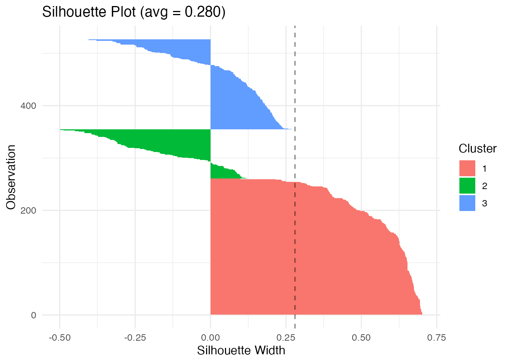
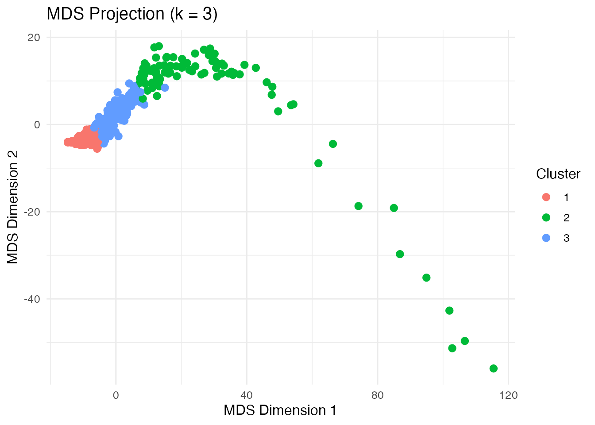
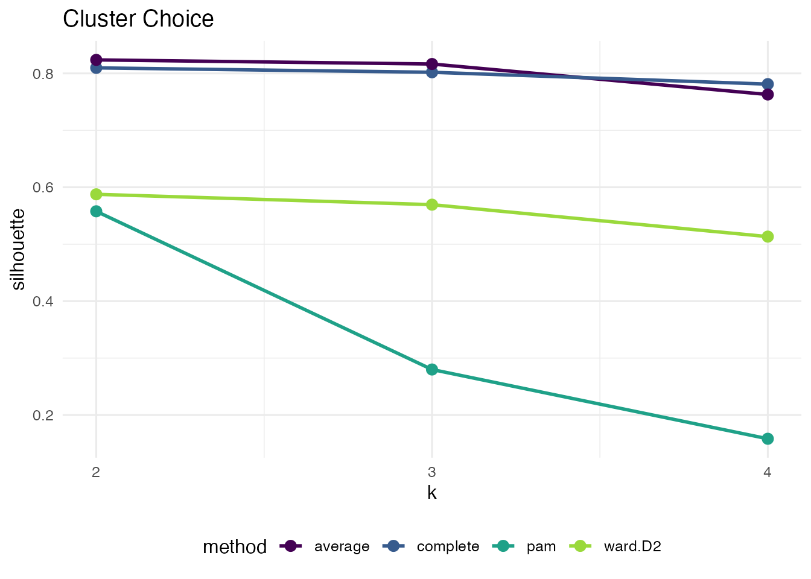

Introduction
Clusters represent subgroups within the data that share similar
patterns. Such patterns may reflect similar temporal dynamics (when we
are analyzing sequence data, for example) or relationships between
variables (as is the case in psychological networks). Units within the
same cluster are more similar to each other, while units in different
clusters differ more substantially. In this vignette, we demonstrate how
to perform clustering on sequence data using Nestimate.
Data
To illustrate clustering, we will use the human_cat
dataset, which contains 10,796 coded human interactions from 429
human-AI pair from programming sessions across 34 projects classified
into 9 behavioral categories. Each row represents a single interaction
event with a timestamp, session identifier, and category label.
library(Nestimate)
data("human_cat")
head(human_cat)
#> id project session_id timestamp session_date actor
#> 5094 3439 Project_7 0086cabebd15 2026-03-05T11:32:52.057Z 2026-03-05 Human
#> 5095 3439 Project_7 0086cabebd15 2026-03-05T11:32:52.057Z 2026-03-05 Human
#> 5096 3439 Project_7 0086cabebd15 2026-03-05T11:32:52.057Z 2026-03-05 Human
#> 5097 3440 Project_7 0086cabebd15 2026-03-05T11:32:52.068Z 2026-03-05 Human
#> 5100 3442 Project_7 0086cabebd15 2026-03-05T11:39:19.098Z 2026-03-05 Human
#> 5103 3444 Project_7 0086cabebd15 2026-03-05T11:41:55.500Z 2026-03-05 Human
#> code category superclass
#> 5094 Context Specify Directive
#> 5095 Direct Command Directive
#> 5096 Specification Specify Directive
#> 5097 Interrupt Interrupt Metacognitive
#> 5100 Verification Verify Evaluative
#> 5103 Specification Specify DirectiveWe can build a transition network using this dataset using
build_network. We need to determine the actor
(session_id), the action
(session_id), and the time
(timestamp). We will use the overall network object as the
starting point to find subgroups since it structures the raw data into
the appropriate units of analysis to perform clustering.
net <- build_network(human_cat,
method = "tna",
action = "category",
actor = "session_id",
time = "timestamp")
#> Metadata aggregated per session: ties resolved by first occurrence in 'code' (628 sessions), 'superclass' (158 sessions)Dissimilarity-based Clustering
Dissimilarity-based clustering groups units of analysis (in our case,
sessions, since that is what we provided as actor) by
directly comparing their observed sequences. In our case, each session
is represented by its sequence of actions, and similarity between
sessions is defined using a distance metric that quantifies how
different two sequences are.
To implement this method using Nestimate, we can use the
cluster_data() function, which takes either raw sequence
data or a network object such as the net object that we
estimated (which also contains the original sequences in
$data):
clust <- cluster_data(net, k = 3)
clust
#> Sequence Clustering
#> Method: pam
#> Dissimilarity: hamming
#> Clusters: 3
#> Silhouette: 0.1305
#> Cluster sizes: 302, 753, 380
#> Medoids: 1429, 80, 128The default clustering mechanism uses Hamming distance (number of positions where sequences differ) with PAM (Partitioning Around Medoids).
The result contains the cluster assignments (which
cluster each session belongs to), the cluster sizes, and a
silhouette score that reflects the quality of the
clustering (higher values indicate better separation between clusters),
among other useful information.
# Cluster assignments (first 20 sessions)
head(clust$assignments, 20)
#> [1] 1 2 3 1 2 2 2 1 2 2 3 2 3 2 2 3 2 2 2 3
# Cluster sizes
clust$sizes
#> 1 2 3
#> 302 753 380
# Silhouette score (clustering quality: higher is better)
clust$silhouette
#> [1] 0.1305163Visualizing Clusters
The silhouette plot shows how well each sequence fits its assigned cluster. Values near 1 indicate good fit; values near 0 suggest the sequence is between clusters; negative values indicate possible misclassification.
plot(clust, type = "silhouette")
The MDS (multidimensional scaling) plot projects the distance matrix to 2D, showing cluster separation.
plot(clust, type = "mds")
Distance Metrics
A distance metric defines how (dis)similarity between sequences is
measured. In other words, it quantifies how different two sequences are
from each other. Nestimate currently supports 9 distance
metrics for comparing sequences:
| Metric | Description | Best for |
|---|---|---|
hamming |
Positions where sequences differ | Equal-length sequences |
lv |
Levenshtein (edit distance) | Variable-length, insertions/deletions |
osa |
Optimal string alignment | Edit distance + transpositions |
dl |
Damerau-Levenshtein | Full edit + adjacent transpositions |
lcs |
Longest common subsequence | Preserving order, ignoring gaps |
qgram |
Q-gram frequency difference | Pattern-based similarity |
cosine |
Cosine of q-gram vectors | Normalized pattern similarity |
jaccard |
Jaccard index of q-grams | Set-based pattern overlap |
jw |
Jaro-Winkler | Short strings, typo detection |
Different metrics may produce different clustering results. You need to choose this based on your research question:
- Hamming: compares sequences position by position (best for aligned sequences of equal length).
- Edit distances (lv, osa, dl): allow insertions and deletions (best when sequences may be shifted or vary in length).
- LCS: captures shared subsequences (best when overall patterns matter more than exact alignment).
We can specify which distance metric we want to use through the
dissimilarity argument:
# Levenshtein distance (allows insertions/deletions)
clust_lv <- cluster_data(human_wide, k = 3, dissimilarity = "lv")
clust_lv$silhouette
#> [1] 0.24561
# Longest common subsequence
clust_lcs <- cluster_data(human_wide, k = 3, dissimilarity = "lcs")
clust_lcs$silhouette
#> [1] 0.0339432Some distance metrics may take additional arguments. For example, the Hamming distance accepts temporal weighting to emphasize earlier or later positions:
# Emphasize earlier positions (higher lambda = faster decay)
clust_weighted <- cluster_data(net,
k = 3,
dissimilarity = "hamming",
weighted = TRUE,
lambda = 0.5)
clust_weighted$silhouette
#> [1] 0.2650696Clustering Methods
By default, Nestimate uses PAM (Partitioning Around Medoids) to form
clusters, which assigns each sequence to the cluster represented by the
most central sequence (the medoid). Besides PAM, Nestimate
supports hierarchical clustering methods, which build clusters step by
step by progressively merging similar units into a tree-like structure
(a dendrogram):
-
ward.D2(“Ward’s Method, Squared Distances”): Minimizes the increase in within-cluster variance using squared distances. Typically produces compact, well-separated clusters. -
ward.D(“Ward’s Method”): An alternative implementation of Ward’s approach using a different distance formulation. Similar behavior, but results may vary slightly. -
complete(“Complete Linkage”): Defines the distance between clusters as the maximum distance between their members. Produces tight, compact clusters. -
average(“Average Linkage”): Uses the average distance between all pairs of points across clusters. Provides a balance between compactness and flexibility. -
single(“Single Linkage”): Uses the minimum distance between points in two clusters. Can capture chain-like structures but may lead to - loosely connected clusters. -
mcquitty(“McQuitty’s Method” / “WPGMA”): A weighted version of average linkage that gives equal weight to clusters regardless of size. -
centroid(“Centroid Linkage”): Defines cluster distance based on the distance between cluster centroids (means). Can produce intuitive groupings but may introduce inconsistencies in the hierarchy.
To use any of these methods instead of PAM, we need to provide the
method argument to cluster_data.
# Ward's method (minimizes within-cluster variance)
clust_ward <- cluster_data(net, k = 3, method = "ward.D2")
clust_ward$silhouette
#> [1] 0.533638
# Complete linkage
clust_complete <- cluster_data(net, k = 3, method = "complete")
clust_complete$silhouette
#> [1] 0.9149815Choosing k (Number of Clusters)
To choose the right clustering solution and method, we need to compare the silhouette scores across different k values and clustering methods (and also distance metrics if we want):
methods <- c("pam", "ward.D2", "ward.D", "complete",
"average", "single", "mcquitty", "median", "centroid")
silhouettes <- lapply(methods, function(m) {
sapply(2:6, function(k) {
cluster_data(net, k = k, method = m, seed = 42)$silhouette
})
})
names(silhouettes) <- methods
silhouettes
#> $pam
#> [1] 0.1758288 0.1305163 0.1683305 -0.1164963 0.1586104
#>
#> $ward.D2
#> [1] 0.8455357 0.5336380 0.5353121 0.5354583 0.4860168
#>
#> $ward.D
#> [1] 0.5520351 0.5028652 0.1537042 0.1595718 0.1746830
#>
#> $complete
#> [1] 0.9315712 0.9149815 0.8960074 0.8761943 0.8685024
#>
#> $average
#> [1] 0.9315712 0.9149815 0.8960074 0.8823133 0.8685024
#>
#> $single
#> [1] 0.9315712 0.9149815 0.8960074 0.8823133 0.8685024
#>
#> $mcquitty
#> [1] 0.9315712 0.9149815 0.8960074 0.8823133 0.8685024
#>
#> $median
#> [1] 0.9315712 0.9149815 0.8960074 0.8823133 0.8685024
#>
#> $centroid
#> [1] 0.9315712 0.9149815 0.8960074 0.8823133 0.8685024
methods <- names(silhouettes)
colors <- rainbow(length(methods))
plot(2:6, silhouettes[[1]], type = "b", pch = 19, col = colors[1],
xlab = "Number of clusters (k)",
ylab = "Average silhouette width",
ylim = c(0, 1),
main = "Choosing k")
for (i in 2:length(methods)) {
lines(2:6, silhouettes[[i]], type = "b", pch = 19, col = colors[i])
}
legend("topright", legend = methods, col = colors, lty = 1, pch = 19)
Higher silhouette scores indicate better-defined clusters. Look for
an “elbow” or maximum. In our case, the best-performing cluster method
is centroid, for k = 2. However, if we inspect the results
of using this method, the cluster sizes are really unbalanced, since one
cluster only contains one sequence.
clust_centroid_2 <- cluster_data(net, k = 2, method = "centroid", seed = 42)
summary(clust_centroid_2)
#> Sequence Clustering Summary
#> Method: centroid
#> Dissimilarity: hamming
#> Silhouette: 0.9316
#>
#> Per-cluster statistics:
#> cluster size mean_within_dist
#> 1 1434 10.64515
#> 2 1 0.00000A more balanced option seems to be using ward.D2, also
with 2 clusters, which yields a reasonable silhouette width
(0.5-0.7).
clust <- cluster_data(net, k = 2, method = "ward.D2", seed = 42)
summary(clust)
#> Sequence Clustering Summary
#> Method: ward.D2
#> Dissimilarity: hamming
#> Silhouette: 0.8455
#>
#> Per-cluster statistics:
#> cluster size mean_within_dist
#> 1 1411 8.972509
#> 2 24 72.601449Mixture Markov Models
Instead of clustering sequences based on how similar they are to one another, we can cluster them together based on their transition dynamics. Mixture Markov models (MMM) fit separate Markov models, and sequences are assigned to the cluster whose transition structure best matches their observed behavior.
To implement MMM, we can use the build_mmm provided by
Nestimate, and we pass the sequence data or network
estimated and the number of clusters (k, by default 2)
mmm_default <- build_mmm(net)We can inspect the results using summary and obtain the
cluster assignment from the results using
mmm_default$assignments.
summary(mmm_default)
#> Mixed Markov Model
#> k = 2 | 1435 sequences | 9 states
#> LL = -20355.7 | BIC = 41881.8 | ICL = 42095.0
#>
#> Cluster Size Mix%% AvePP
#> ------------------------------
#> 1 340 26.1% 0.919
#> 2 1095 73.9% 0.943
#>
#> Overall AvePP = 0.937 | Entropy = 0.222 | Class.Err = 0.0%
#>
#> --- Cluster 1 (26.1%, n=340) ---
#> Command Correct Frustrate Inquire Interrupt Refine Request Specify
#> Command 0.066 0.020 0.017 0.006 0.009 0.015 0.382 0.434
#> Correct 0.058 0.071 0.096 0.044 0.150 0.127 0.060 0.290
#> Frustrate 0.098 0.098 0.160 0.074 0.003 0.222 0.180 0.117
#> Inquire 0.162 0.165 0.203 0.202 0.015 0.054 0.103 0.084
#> Interrupt 0.203 0.095 0.103 0.070 0.199 0.082 0.022 0.112
#> Refine 0.042 0.093 0.055 0.074 0.054 0.084 0.143 0.443
#> Request 0.032 0.004 0.032 0.000 0.031 0.010 0.010 0.870
#> Specify 0.463 0.012 0.013 0.014 0.352 0.017 0.028 0.073
#> Verify 0.215 0.027 0.189 0.154 0.014 0.175 0.093 0.057
#> Verify
#> Command 0.052
#> Correct 0.103
#> Frustrate 0.049
#> Inquire 0.011
#> Interrupt 0.114
#> Refine 0.013
#> Request 0.011
#> Specify 0.028
#> Verify 0.076
#>
#> --- Cluster 2 (73.9%, n=1095) ---
#> Command Correct Frustrate Inquire Interrupt Refine Request Specify
#> Command 0.255 0.114 0.064 0.077 0.040 0.047 0.090 0.264
#> Correct 0.088 0.096 0.145 0.052 0.037 0.114 0.124 0.291
#> Frustrate 0.098 0.122 0.175 0.069 0.050 0.166 0.101 0.132
#> Inquire 0.193 0.135 0.090 0.187 0.085 0.067 0.084 0.110
#> Interrupt 0.266 0.096 0.097 0.143 0.035 0.093 0.094 0.155
#> Refine 0.055 0.073 0.071 0.040 0.030 0.087 0.151 0.474
#> Request 0.102 0.021 0.047 0.082 0.039 0.040 0.043 0.590
#> Specify 0.187 0.079 0.104 0.089 0.097 0.102 0.076 0.225
#> Verify 0.203 0.091 0.162 0.116 0.041 0.094 0.115 0.091
#> Verify
#> Command 0.051
#> Correct 0.055
#> Frustrate 0.086
#> Inquire 0.050
#> Interrupt 0.021
#> Refine 0.019
#> Request 0.037
#> Specify 0.041
#> Verify 0.086
head(mmm_default$assignments,10)
#> [1] 1 2 2 2 2 2 2 1 2 2To decide which number of clusters best represents the structure of
our data, we can use the compare_mmm function and provide
again the net object and a range of k to run a
full comparison.
mmm_comparison <- compare_mmm(net, k = 2:8)
mmm_comparison
#> MMM Model Comparison
#>
#> k log_likelihood AIC BIC ICL AvePP Entropy converged
#> 2 -20355.74 41033.49 41881.79 42094.96 0.9370297 0.2221720 TRUE
#> 3 -20152.03 40788.06 42063.14 42763.96 0.8034701 0.3962539 TRUE
#> 4 -20026.82 40699.65 42401.51 43276.76 0.7659423 0.4252817 FALSE
#> 5 -19926.77 40661.55 42790.19 43964.70 0.7085776 0.4411911 TRUE
#> 6 -19813.15 40596.30 43151.73 44335.26 0.7071495 0.4148854 TRUE
#> 7 -19752.65 40637.30 43619.50 44950.25 0.6838534 0.4236204 FALSE
#> 8 -19660.85 40615.69 44024.68 45379.74 0.6746012 0.4241401 FALSE
#> best
#> <-- BIC
#>
#>
#>
#>
#>
#> The results show that k = 2 is indeed the best
clustering solution.
Building Networks per Cluster
Once sequences are clustered, we can create separate networks by
cluster. We need to pass the clustering result to
build_network and use the group argument to
indicate that we want to group by cluster assignment.
cluster_net <- build_network(clust)We may also compare which transition probabilities differ significantly among clusters using permutation testing:
comparison <- permutation_test(cluster_net)